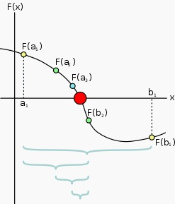

O método da bisseção é um método numérico para encontrar as raízes de uma função. Trata-se de um método simples e robusto, porém menos eficiente quando comparado a métodos como o método de Newton ou o método das secantes.
 Este método pode ser usado para encontrar as raízes de uma função contínua {\textstyle f: [a,b]-> R, y = f(x)}, tendo f(a) e f(b) sinais opostos, ou seja, f(a)* f(b) < 0. Observamos, que como consequência do teorema do valor intermediário, estas condições garante a existência de uma raiz no intervalo [a,b]. O método consiste em dividir o intervalo no seu ponto médio c=(a+b)/2, e então verificar em qual dos dois subintervalos intervalos se encontra a raiz. Para tanto, basta verificar se f(a)* f(c) < 0. Caso afirmativo, a raiz encontra-se no intervalo [a,c], caso contrário ela se encontra no intervalo [c,b]. O procedimento é, então, repetido para o subintervalo correspondente à raiz até que c aproxime a raiz com a precisão desejada. |